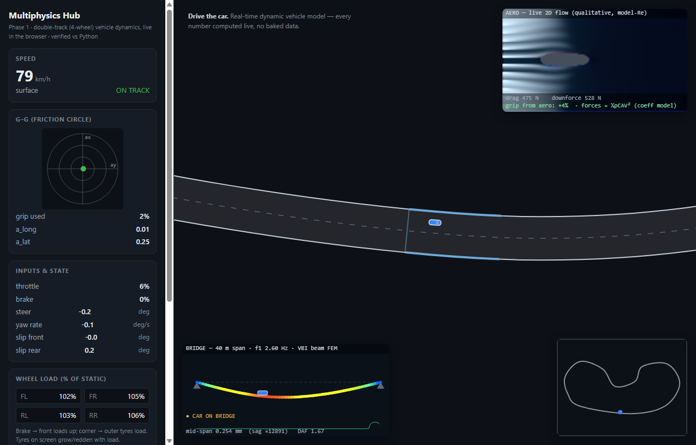

Multiphysics Hub
Vehicle dynamics, CFD and structural dynamics in one
You drive a car around a track in the browser, and three simulations run under it at once: a four-wheel car with Pacejka tyres, a 2D fluid that I run around the car body to get drag and downforce, and a bridge that bends when you drive over it. I wrote each model in Python and checked it, then ported it to JavaScript so it runs live; the two versions agree to about 10-13 for the car and 10-9 m for the bridge. This one ties together the three projects below.